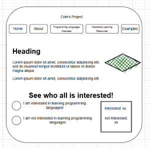
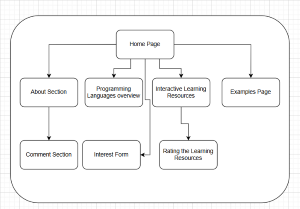

Project overview
The application I am building for my client is going to be based around the "student who would like to learn about the basics of JavaScript, CSS or any other programming language." web-application stated in the project description. My client is a business student at UNCC, so I will be building this application for them and other businesses students to learn more about programming languages that are used a lot in a more business sense.
Content
The content that this application will have is a home page, a page about diffferent types of businesses and what programming languages are best for each type of business, a page about programming languages, an example page with real-world projects, and a page with resource that are best for learning about programming languages.
Client Information
- Name: Cole Wickersham
- Institute: University of North Carolina at Charlotte
- email: cwicker3@charlotte.edu
- phone: N/A
Wireframe
Site Map
Page Design
Home Page
- Purpose: The starting page where users dicover the site is about learning programming languages for different types of businesses.
- Users of page: Business students who are interested in learning programming languages used most often in business.
- Content: The home page will have a short introduction to the site and a link to the other pages
- Any data required: You will have the option to say you are interested in learning a programming language
- Will those data fields need any validations: good question
- buttons or hyperlinks or drop downs: hyperlinks
- actions: the user will be able to access the other pages on the site.
About Section
- Purpose: Where the user is able to learn about different types of businesses and what programming languages are best for each type of business.
- Users of page: Business students who are interested in learning programming languages used most often in business.
- Content: lots of information about different types of businesses and links to the other pages
- Any data required: possiblely a comment section to chare your own thoughts and opinions
- Will those data fields need any validations: good question
- buttons or hyperlinks or drop downs: hyperlinks, button
- actions: the user will be able to access the other pages on the site and add thier own opinions on what programming languages are most used.
Programming Languages Overview Page
- Purpose: Where the user is able to learn about different programming languages and what they are used for.
- Users of page: Anyone who is curious about programming languages
- Content: lots of information about different types of programming languages and links to the other pages
- Any data required: none
- Will those data fields need any validations: no
- buttons or hyperlinks or drop downs: hyperlinks
- actions: the user will be able to access the other pages on the site.
Interactive Learning Resources Page
- Purpose: Where the user are able to access other reasources designed for learning programming languages.
- Users of page: Anyone who wants to get into programming.
- Content: lots of information about different types online learning platforms designed for learning programming languages and links to the other pages
- Any data required: none
- Will those data fields need any validations: no
- buttons or hyperlinks or drop downs: hyperlinks
- actions: The user is able to explore all their possiblelys to learing programming languages.
Examples Page
- Purpose: Where the user are able to access visual examples of different programming languages being used in the work place
- Users of page: business students curious about what these programming languages are used for.
- Content: lots of information about different types popular projects and links to the other pages
- Any data required: none
- Will those data fields need any validations: no
- buttons or hyperlinks or drop downs: hyperlinks
- actions: The user is able to learn visually what programming languages are used in the work place
Dynamic Functionality on the website
- hyperlinks: every page using this website will have hyperlinks to the other pages.
- Buttons:The buttons that'll be used on this page will be for the Home page and the Interactive Learning Resources page
- Comments: The interactive learning resources page will have a comment section where you'll be able to use a text form and a button to submit your comment.